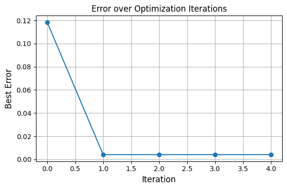
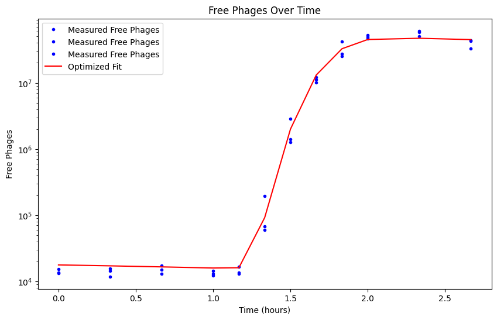

Phage One-Step Growth Case Study#
This example uses the model developed in the paper: https://www.biorxiv.org/content/10.1101/2025.05.15.651590v1
[1]:
import numpy as np
from scipy.integrate import odeint
import matplotlib.pyplot as plt
import os
import sys
import scipy.io
from concurrent.futures import ProcessPoolExecutor
# Get path
project_root = os.path.abspath(os.path.join(os.getcwd(), '..'))
sys.path.insert(0, project_root)
[2]:
import sys
sys.path.append('./..') # or absolute path if needed
from invode import ODEOptimizer, lhs_sample, load_matlab_data
[3]:
'''
file_path = './../sample_data/HS6_13-15_2024.mat'
free_phages = load_matlab_data(file_path)['free_phages']
S0 = np.mean(load_matlab_data(file_path)['S0_replicates'])
V0 = np.mean(load_matlab_data(file_path)['V0_replicates'])
time = load_matlab_data(file_path)['time_free_phages'].flatten()/60 # Convert time to hours
'''
free_phages = np.array([[ 13200, 13500, 15400],
[ 15500, 11800, 14450],
[ 17200, 13100, 15000],
[ 12100, 13000, 14500],
[ 16700, 12900, 13500],
[ 194000, 60000, 67000],
[ 2860000, 1280000, 1410000],
[12200000, 11100000, 10100000],
[42000000, 27300000, 25350000],
[49000000, 53000000, 47000000],
[58500000, 50500000, 61000000],
[42500000, 33000000, 44000000]])
time = np.array([0. , 0.33333333, 0.66666667, 1. , 1.16666667,
1.33333333, 1.5 , 1.66666667, 1.83333333, 2. ,
2.33333333, 2.66666667])
S0 = 128906002
V0 = np.mean(free_phages[:,0])
[4]:
'''
# Initial guess for parameters ===
initial_guess = {
'r': 0.3,
'phi': 4.5e-08 ,
'beta': 256,
'tau': 2,
'NE': 180
}
# Initial conditions ===
y0 = np.zeros((initial_guess['NE']+3,))
y0[0] = S0
y0[-1] = V0
'''
[4]:
"\n\n# Initial guess for parameters ===\ninitial_guess = {\n 'r': 0.3,\n 'phi': 4.5e-08 ,\n 'beta': 256,\n 'tau': 2,\n 'NE': 180\n}\n\n\n# Initial conditions ===\ny0 = np.zeros((initial_guess['NE']+3,))\ny0[0] = S0\ny0[-1] = V0\n"
[5]:
def onstep(y, t, params):
phi = params['phi']
beta = params['beta']
tau = params['tau']
r = params['r']
NE = params['NE']
S = y[0]
E_mat = y[1:NE+1]
I = y[NE+1]
V = y[NE+2]
etaeff = ((NE+1)/tau)
dotS = r*S - phi*V*S
dotE1 = phi*S*V - etaeff * E_mat[0]
if NE > 1:
dotE_mat = np.zeros(NE-1)
dotE_mat[:] = etaeff * E_mat[0:-1] - etaeff * E_mat[1:]
dotI = etaeff * (E_mat[-1] - I)
dotV = beta * etaeff * I - V * phi * (S + I + np.sum(E_mat))
# Build the full derivative vector (same length as y)
dydt = np.zeros_like(y)
dydt[0] = dotS
dydt[1:NE+1] = dotE1 if NE == 1 else np.concatenate([[dotE1], dotE_mat])
dydt[NE+1] = dotI
dydt[NE+2] = dotV
return dydt
[6]:
def simulate_model(params):
# Initial conditions ===
params['NE'] = int(params['NE'])
y0 = np.zeros((params['NE']+3,))
y0[0] = S0
y0[-1] = V0
## dilution step
time_dil = np.linspace(0, 0.25, 200) # Short time for dilution step
sol_dil = odeint(onstep, y0, time_dil, args=(params,))
y0_dil = sol_dil[-1, :]/100 # Use the last state as the new initial condition
## main simulation
sol = odeint(onstep, y0_dil, time, args=(params,))
phage_solution = sol[:,-1]
return phage_solution
[7]:
def mse(model_output):
target = np.mean(free_phages, axis=1)
if len(model_output) != len(target):
raise ValueError("Length mismatch between model output and data")
return np.mean((np.log10(model_output) - np.log10(target)) ** 2)
[8]:
#free_phages_sol = simulate_model(initial_guess)
[9]:
param_bounds = {
'r': 0.3, # fixed
'phi': (1e-8, 1e-7),
'beta': (100, 500),
'tau': (1, 5),
'NE': (100, 200)
}
optimizer = ODEOptimizer(
ode_func=simulate_model,
error_func=mse,
param_bounds=param_bounds,
#initial_guess=initial_guess,
seed=42,
num_top_candidates=2,
n_samples=100,
num_iter=5,
verbose_plot=True,
verbose = True
)
[10]:
optimizer.fit()
Fitting Progress: 0%| | 0/5 [00:00<?, ?it/s]
Iteration 1/5
Fitting Progress: 20%|██████████▏ | 1/5 [00:00<00:03, 1.02it/s]
Best error so far: 0.1183
Best params: {'phi': 4.266983966023513e-08, 'beta': 377.39952281604735, 'tau': 2.0208683819873485, 'NE': 157, 'r': 0.3}
Iteration 2/5
Fitting Progress: 40%|████████████████████▍ | 2/5 [00:03<00:06, 2.02s/it]
Best error so far: 0.0041
Best params: {'phi': 7.00989772815266e-08, 'beta': 391.1287225045886, 'tau': 1.9741647732052143, 'NE': 163, 'r': 0.3}
Iteration 3/5
Fitting Progress: 60%|██████████████████████████████▌ | 3/5 [00:06<00:04, 2.47s/it]
Best error so far: 0.0041
Best params: {'phi': 7.00989772815266e-08, 'beta': 391.1287225045886, 'tau': 1.9741647732052143, 'NE': 163, 'r': 0.3}
Iteration 4/5
Fitting Progress: 80%|████████████████████████████████████████▊ | 4/5 [00:09<00:02, 2.64s/it]
Best error so far: 0.0041
Best params: {'phi': 7.00989772815266e-08, 'beta': 391.1287225045886, 'tau': 1.9741647732052143, 'NE': 163, 'r': 0.3}
Iteration 5/5
Fitting Progress: 100%|███████████████████████████████████████████████████| 5/5 [00:12<00:00, 2.48s/it]
Best error so far: 0.0041
Best params: {'phi': 7.00989772815266e-08, 'beta': 391.1287225045886, 'tau': 1.9741647732052143, 'NE': 163, 'r': 0.3}
Refining params: {'phi': 7.013988205829579e-08, 'beta': 348.49148227932295, 'tau': 1.9239617327028835, 'NE': 173}
[Local Optimization]
Refined parameters: {'phi': 6.823759283454945e-08, 'beta': 348.4914781187379, 'tau': 1.9422442211934774, 'NE': 173.0, 'r': 0.3}
Refined error: 0.004188937021152051
Refining params: {'phi': 7.158050791552344e-08, 'beta': 445.2424565642069, 'tau': 1.9461328394135549, 'NE': 154}
[Local Optimization]
Local optimization failed: ABNORMAL_TERMINATION_IN_LNSRCH
After local refinement:
Best params: {'phi': 6.823759283454945e-08, 'beta': 348.4914781187379, 'tau': 1.9422442211934774, 'NE': 173.0, 'r': 0.3}
Best error: 0.0042

[10]:
({'phi': 6.823759283454945e-08,
'beta': 348.4914781187379,
'tau': 1.9422442211934774,
'NE': 173.0,
'r': 0.3},
0.004188937021152051)
[11]:
best_params = optimizer.best_params
[12]:
phages_fit = simulate_model(best_params)
plt.figure(figsize=(10, 6))
plt.plot(time, free_phages, label='Measured Free Phages', color='blue', marker='o', markersize=3, linestyle='none')
#plt.plot(time, free_phages_sol, label='Initial Guess', linestyle='--', color='orange')
plt.plot(time, phages_fit, label='Optimized Fit', color='red')
plt.xlabel('Time (hours)')
plt.ylabel('Free Phages')
plt.yscale('log')
plt.title('Free Phages Over Time')
plt.legend()
plt.show()

[13]:
optimizer.summary()
🔍 ODEOptimizer Summary:
ode_func: simulate_model
error_func: mse
param_bounds: {'phi': (1e-08, 1e-07), 'beta': (100, 500), 'tau': (1, 5), 'NE': (100, 200)}
initial_guess: {'phi': 5.4999999999999996e-08, 'beta': 300.0, 'tau': 3.0, 'NE': 150.0, 'r': 0.3}
n_samples: 100
num_iter: 5
num_top_candidates: 2
do_local_opt: True
local_method: L-BFGS-B
shrink_rate: 0.5
parallel: False
local_parallel: False
verbose: True
verbose_plot: True
seed: 42
best_error: 0.004188937021152051
best_params: {'phi': 6.823759283454945e-08, 'beta': 348.4914781187379, 'tau': 1.9422442211934774, 'NE': 173, 'r': 0.3}
[14]:
df = optimizer.get_top_candidates_table()
print(df)
iteration rank error phi beta tau NE r
0 1 1 0.118342 4.266984e-08 377.399523 2.020868 157 0.3
1 1 2 0.131130 4.917636e-08 334.668375 2.045617 168 0.3
2 2 1 0.004130 7.009898e-08 391.128723 1.974165 163 0.3
3 2 2 0.006739 6.835375e-08 294.076868 1.907686 190 0.3
4 3 1 0.005034 7.649504e-08 442.555402 1.990015 153 0.3
5 3 2 0.014846 8.143537e-08 292.647566 1.947413 182 0.3
6 4 1 0.016187 6.538001e-08 242.538774 1.912211 168 0.3
7 4 2 0.020552 8.440974e-08 361.452366 1.934187 158 0.3
8 5 1 0.005695 7.013988e-08 348.491482 1.923962 173 0.3
9 5 2 0.014288 7.158051e-08 445.242457 1.946133 154 0.3
[ ]: